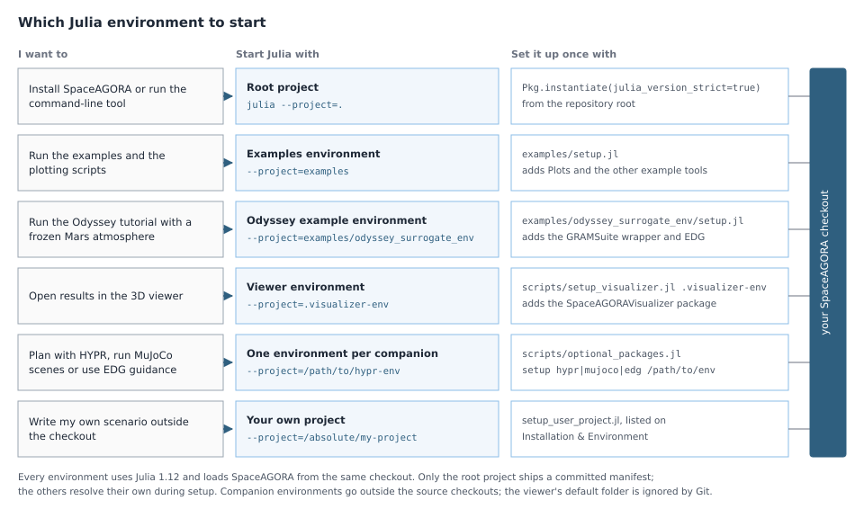

Installation and Environment
Use this page when you need to set up a machine for local development, examples, or docs builds.
This page is for users and contributors who need to understand the repository environments before running anything heavier than a quick smoke path.
Shortest successful command. Terminal, from the repository root (the directory that contains Project.toml):
julia --project=. -e "using Pkg; Pkg.instantiate(julia_version_strict=true)"Command blocks on this page say where they are typed: "Terminal" is the shell prompt (PowerShell or Command Prompt on Windows, a terminal on Linux/macOS), and "Julia REPL" is the julia> prompt inside a running Julia session.
What to read next:
Julia version
SpaceAGORA requires Julia 1.12; any 1.12.x patch release works. The root Project.toml and the Odyssey example environment declare julia = "~1.12", which excludes Julia 1.13 and later as well as 1.11 and earlier. Install a 1.12 release before instantiating either project (with juliaup: juliaup add 1.12 and juliaup default 1.12) and confirm it with julia --version.
What an unsupported release reports:
- Resolving an environment, which the Odyssey example setup and every
Pkg.add,Pkg.updateorPkg.resolvedo, stops with an error saying that thejulia = ~1.12compat entry does not include your Julia version (Julia 1.12 words it asjulia version requirement for package at ... not satisfied; other releases word it differently). Pkg.instantiate()of the root project installs the committed manifest without resolving, so it does not read that compat entry. Withjulia_version_strict=true, the form used in the documented commands, it stops at once withThe active manifest file has dependencies that were resolved with a different julia version (1.12.3). Without the option it only warns and then fails later, on missing standard-library sources or in precompilation. On Julia 1.11 or older the option itself is unknown and the command fails withtype Context has no field julia_version_strict; the remedy is the same.
Troubleshooting lists these symptoms with their fixes.
Check the installation
A successful setup looks like this. Terminal, from the repository root:
julia --version
julia --project=. -e "using SpaceAGORA; println(pkgdir(SpaceAGORA))"The first command prints julia version 1.12. followed by the patch number. The second prints the absolute path of your checkout; the first time it runs it also compiles the package, which takes several minutes and shows precompilation progress, and nothing else should be printed. The same check from a Julia REPL started from the repository root with julia --project=.:
julia> Base.active_project()
"/absolute/path/to/SpaceAGORA.jl/Project.toml"
julia> using SpaceAGORA
julia>Base.active_project() must end in SpaceAGORA.jl/Project.toml. Any other path means Julia was started from another directory or without --project=., and using SpaceAGORA then fails with Package SpaceAGORA not found in current path. See Troubleshooting.
The repository environments

The sections below describe each environment.
Root project (--project=.)
The root project at the repository root is the canonical execution environment used by examples, tests, benchmarks, and most local commands in this repository.
Use it for:
- example scripts
- local verification runs
- benchmark launchers
- CLI commands
examples/odyssey_surrogate_env/
The Odyssey surrogate example has its own environment. It adds the public GRAMSuite Julia wrapper, which provides the native-free grid atmosphere, and uses the current SpaceAGORA checkout. Its setup script instantiates it, and the resolved manifest stays local. Terminal, from the repository root:
julia --project=examples/odyssey_surrogate_env examples/odyssey_surrogate_env/setup.jl
julia --project=examples/odyssey_surrogate_env examples/odyssey_surrogate.jlThe setup also clones the EDG guidance companion from GitHub into packages/gnc/SpaceAGORAEDG.jl and adds it to this environment, which rewrites the tracked examples/odyssey_surrogate_env/Project.toml; git status then shows that file as modified, which is expected. The environment resolves its own manifest, including SpaceAGORA's dependencies, so the root instantiate is not a prerequisite, although the documented installation order runs it first. The first setup needs network access, and on an empty Julia depot it downloads on the order of a gigabyte of packages and binary artifacts; with compiled caches and the example's assets the depot grows by a few gigabytes. See the Odyssey walkthrough.
Optional package commands
From a SpaceAGORA Git clone, a shared helper manages the optional repositories under packages/robotics/ and packages/gnc/. It uses Julia's standard library and command-line Git for source inspection and checkout; it does not require loading SpaceAGORA first. Terminal, from the repository root:
julia --startup-file=no scripts/optional_packages.jl status
julia --startup-file=no scripts/optional_packages.jl checkout hypr
julia --startup-file=no scripts/optional_packages.jl check hypr
julia --startup-file=no scripts/optional_packages.jl setup hypr /path/to/hypr-envThe selectors are hypr, mujoco and edg. status reports the checkouts; checkout acquires the selected source at its recorded Git revision; check verifies its revision, package identity, version and clean state. It does not run scientific or native tests. setup also performs checkout and verification, then calls the existing installer with the selected local package and current core checkout. Use a separate environment outside the source checkouts. Installation can download dependencies and perform the installer’s normal preparation work.
Only the selected submodule is initialized. This route does not recursively fetch other packages or change the existing GRAMSuite setup under data/GRAMSuite.jl. A dirty or mismatched package checkout is refused rather than reset. The environment refers to the source paths, so keep those checkouts in place while using it.
GitHub source ZIPs omit submodule contents and the Git metadata needed to verify the recorded revisions. Clone SpaceAGORA to use these commands, or follow a companion's standalone installation guide. Merely seeing the folder in a clone does not mean the package is installed in the active Julia environment.
Optional HYPR planner
HYPR lives at packages/robotics/HYPR.jl and supports RPO and robot-arm planning. The existing packages/SpaceAGORAHYPR/ compatibility shim loads its SpaceAGORA adapter. After setup hypr, start Julia with --project=/path/to/hypr-env and load SpaceAGORA and SpaceAGORAHYPR. The planner guide also documents the existing scripts/setup_hypr.jl route, which acquires HYPR from its external repository without using this submodule layout.
Optional MuJoCo companion
SpaceAGORAMuJoCo.jl provides standalone proximity scenes and externally propagated spacecraft inside run_simulation. Its repository owns the package, native binding, tests and Basilisk comparison harness. Julia 1.12 is required; native scenes currently support Linux x86_64 and use the pinned MuJoCo 3.11.0 artifact.
The pinned source is available at packages/robotics/SpaceAGORAMuJoCo.jl. Terminal, from the SpaceAGORA repository root:
julia --startup-file=no scripts/optional_packages.jl setup mujoco /path/to/mujoco-env
julia --startup-file=no --project=/path/to/mujoco-envThen, in the Julia REPL that the second command started, load the packages explicitly:
using SpaceAGORA, SpaceAGORAMuJoCoThe shared helper passes this core checkout to the companion's installer through SPACEAGORA_CORE_PATH. The companion creates its own environment and manifest. Loading core alone does not load this adapter or download MuJoCo; the native artifact is obtained when first needed by a native operation.
The standalone route remains available: clone the companion separately and run its scripts/setup_env.jl. Without an explicit core override, that installer fetches the exact core revision recorded in the companion's Project.toml. The standalone default and the current-checkout route are distinct source pairs. For either route, a package version-family constraint alone is insufficient; the source pair and ExternalPropagationServices contract must agree. See the companion's installation guide for standalone commands and overrides. Start with Orbital Scenes with MuJoCo for the frame conventions, ownership rules and complete examples. The supported connection is documented in External propagation services and the shared optional adapter standard.
Optional energy-depletion guidance
SpaceAGORAEDG contains the experimental energy-depletion planning implementation. Its linked checkout belongs in packages/gnc/SpaceAGORAEDG.jl. SpaceAGORA owns the simulation state, callback schedule, accumulated heat and application of panel commands; the companion computes decisions through EDGServices contract 1.0.0.
For a core revision that records a published EDG companion pin. Terminal, from the repository root:
julia --startup-file=no scripts/optional_packages.jl setup edg /path/to/edg-env
julia --startup-file=no --project=/path/to/edg-envLoad both packages before creating an EDG mission. Julia REPL:
using SpaceAGORA, SpaceAGORAEDG
SpaceAGORA.EDGServices.require_provider()The CLI preserves the prepared EDG environment for the built-in EDG examples. Start it with --project=/path/to/edg-env, or set SPACEAGORA_EDG_ENV=/path/to/edg-env. With --visualize, the selected visualizer environment must also declare SpaceAGORAEDG; this avoids launching a mission with only one of its required companions.
The installer checks the recorded revision and package identity, then creates a separate environment using this core checkout. An absent pin, incompatible service contract or missing provider raises an error. It does not select a different guidance method or install a provider merely because core was loaded. The standalone companion installer instead uses its recorded immutable core revision. See the companion's docs/installation.md for that route and explicit local development overrides.
Installation and load-order checks establish that the packages connect. They do not establish flight readiness or full reproduction of the EDG study. The approved experimental cases retain the original 3 Hz guidance/control rates and original heat and structural limits. Known sampled constraint violations remain reported as violations. Native validation still needs the identified GRAM and SPICE assets. The native-free Odyssey surrogate exercise is a separate example with its own documented configuration, not a substitute for that campaign.
The existing numerical EDG suites continue to run in both normal and coverage CI, with the companion required. The parent coverage gate also collects the companion kernels at the existing thresholds and rejects missing measurements; extracting a file does not remove it from that gate. A separate core-only check verifies that loading SpaceAGORA without EDG remains possible. To reproduce those tests in an isolated development environment, terminal, from the repository root:
julia --startup-file=no scripts/setup_edg.jl /path/to/edg-test-env
julia --startup-file=no --project=/path/to/edg-test-env test/runtests.jlThe test setup retains the core's dependency versions and leaves its tracked project files unchanged. SPACEAGORA_EDG_PATH=/absolute/path/to/SpaceAGORAEDG.jl is an explicit development override for this test helper; it is not a release pin. Full suites may require the other documented optional packages and assets.
Your own project
Keep your script and generated results in a project outside the SpaceAGORA checkout. First select a recorded commit in your existing checkout and use absolute paths. The setup below explicitly installs that checkout into the new project, resolves its dependencies without copying a repository manifest, and declares the packages imported by the custom-force walkthrough. It does not add private modules to Julia's load path.
Save this as setup_user_project.jl outside the checkout:
using Pkg
length(ARGS) == 2 || error("Usage: setup_user_project.jl CHECKOUT NEW_PROJECT")
checkout, project = abspath.(ARGS)
isdir(project) && !isempty(readdir(project)) &&
error("Choose a new empty project directory")
mkpath(project)
Pkg.activate(project)
Pkg.develop(PackageSpec(path=checkout); preserve=Pkg.PRESERVE_ALL)
Pkg.add([PackageSpec(name="StaticArrays"), PackageSpec(name="CSV"),
PackageSpec(name="DataFrames")]; preserve=Pkg.PRESERVE_ALL)
Pkg.instantiate()Run setup, then save my_effector.jl from the walkthrough in the new project. Terminal, from any directory, since both commands use absolute paths:
julia --startup-file=no setup_user_project.jl /absolute/SpaceAGORA.jl /absolute/my-project
JULIA_LOAD_PATH="@:@stdlib" julia --startup-file=no --project=/absolute/my-project /absolute/my-project/my_effector.jlThe load-path setting prevents unrelated packages in your default global project from hiding a missing direct dependency. On Windows, Julia uses ; as the load path separator, so set JULIA_LOAD_PATH to @;@stdlib before launching Julia. The script writes results beside itself, independently of the terminal's working directory. Inspect SimulationResults and the three written files as described on Simulation Outputs.
Setup uses your existing Julia depot and can download missing packages. An explicit cached/offline check may instead set JULIA_PKG_OFFLINE=true and JULIA_PKG_PRECOMPILE_AUTO=0; a missing cached dependency then remains a setup failure, not permission to substitute another version. Success with a populated depot is not a clean-depot installation result. Do not modify the source checkout while a separate project is using its development path; record the checkout commit and both generated environment files with any result you keep.
The optional planner companion has its own documented installation. Installing the core project alone does not install or qualify HYPR, native GRAM, SPICE data, or a full mission workflow.
Local output paths
Generated reports stay local. Common ignored output roots are:
output/odyssey_surrogate_results/andodyssey_surrogate_<cap>/, the Odyssey surrogate example's defaults when run from the repository root
When you need more than setup
Environment setup only tells you that the Julia side is ready. If you need to know whether the machine also has the right data and licensed assets, go to Assets & Modes.